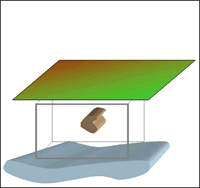

<script type="text/javascript">
<!--
function MM_swapImgRestore() { //v3.0
var i,x,a=document.MM_sr; for(i=0;a&&i<a.length&&(x=a[i])&&x.oSrc;i++) x.src=x.oSrc;
}
function MM_preloadImages() { //v3.0
var d=document; if(d.images){ if(!d.MM_p) d.MM_p=new Array();
var i,j=d.MM_p.length,a=MM_preloadImages.arguments; for(i=0; i<a.length; i++)
if (a[i].indexOf("#")!=0){ d.MM_p[j]=new Image; d.MM_p[j++].src=a[i];}}
}

function MM_findObj(n, d) { //v4.01
var p,i,x; if(!d) d=document; if((p=n.indexOf("?"))>0&&parent.frames.length) {
d=parent.frames[n.substring(p+1)].document; n=n.substring(0,p);}
if(!(x=d[n])&&d.all) x=d.all[n]; for (i=0;!x&&i<d.forms.length;i++) x=d.forms[i][n];
for(i=0;!x&&d.layers&&i<d.layers.length;i++) x=MM_findObj(n,d.layers[i].document);
if(!x && d.getElementById) x=d.getElementById(n); return x;
}

function MM_swapImage() { //v3.0
var i,j=0,x,a=MM_swapImage.arguments; document.MM_sr=new Array; for(i=0;i<(a.length-2);i+=3)
if ((x=MM_findObj(a[i]))!=null){document.MM_sr[j++]=x; if(!x.oSrc) x.oSrc=x.src; x.src=a[i+2];}
}

</script>

        <tr>
            <td>
                <p align="left">
                    <font size="-1">
                        </img>
                    </font>
                </p>
                <form action="" method="post" name="form2">

                    <input type="radio" onclick="MM_swapImage('burieddipole','','../../_images/no_field.gif',1)" checked="checked" value="radiobutton" name="radiobutton"></input>
                    <b>

                        1.

                    </b>

                     No incident magnetic field.

                    <br></br>
                    <input type="radio" onclick="MM_swapImage('burieddipole','','../../_images/inducing_field.gif',1)" value="radiobutton" name="radiobutton"></input>
                    <b>

                        2.

                    </b>

                    Earth's field causes material to become magnetized.

                    <br></br>
                    <input type="radio" onclick="MM_swapImage('burieddipole','','../../_images/magnetic_anomaly.gif',1)" value="radiobutton" name="radiobutton"></input>
                    <b>

                        3.

                    </b>

                     Plotting these measurements produces a map of this magnetic anomaly.

                    <br></br>
                    <input type="radio" value="radiobutton" onclick="MM_swapImage('burieddipole','','../../_images/measurements.gif',1)" name="radiobutton"></input>
                    <strong>

                        4.

                    </strong>

                      Often measurements are made along lines and the anomaly is plotted as a graph.

                </form>
            </td>
        </tr>
        <br>